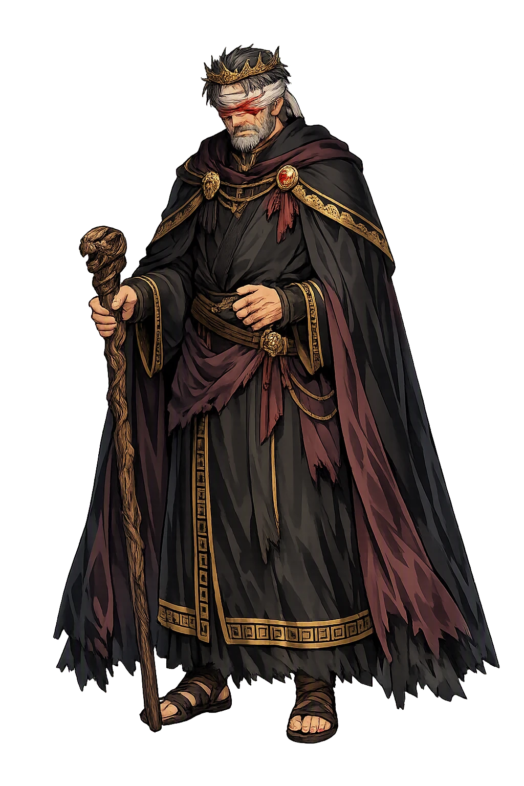
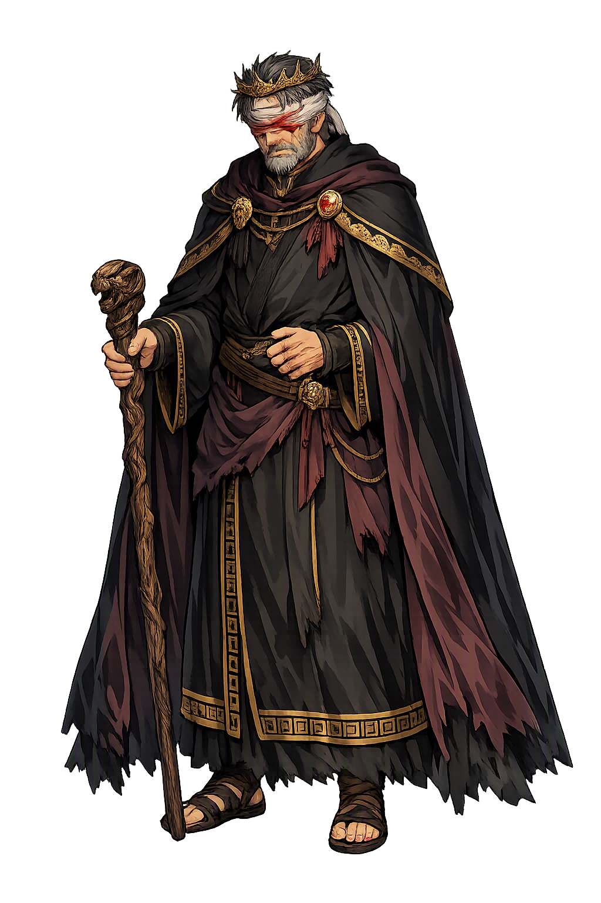

The Living Myth
Fate, Riddles, Thebes · Swollen-foot (from οἰδάω + πούς)

Stories of Oidípous
Oidípous is the subject of the most perfectly constructed tragedy in the Greek corpus. Homer, Hesiod and Pindar preserve fragments of his story; Sophocles gave it its final form in two plays set forty years apart — one the anatomy of self-discovery, the other the redemption of the polluted man. His fate is never a secret: the audience knows it from the first line, and that is the point.
Laios, king of Thebes, was warned by the Delphic oracle that the son born to him would kill his father. When the child came, he ordered it exposed on Mount Kithairon with a pin driven through its ankles to fix it to the ground; a shepherd took pity and passed the baby to a Corinthian, who carried it to the childless king Polybos. The wound named the child — Oidípous, ‘Swollen-foot’ — and the name told the story to every Greek who heard it. Homer already knows the tale in outline (Odyssey 11.271–280), Pindar tells how Laios, ‘who met the glorious oracle’, was destroyed by the son he feared (Olympian 2.35–42), and Sophocles keeps the pins (Oidipous Tyrannos 1034–1046).
The myth's engine is visible from the first scene: every act of prevention is a further link in the chain. The shepherd's pity — the one merciful gesture in the story — is exactly the mechanism by which the oracle is armed.
On his road to Thebes Oidípous met the Sphinx — ‘who plagued the Cadmeans’, as Hesiod calls her, the daughter of Typhon and Echidna (Theogony 326–329) — and she put the riddle: what creature walks on four legs at dawn, two at noon and three in the evening. Citizens of Thebes had died for failing it; Oidípous answered man, who crawls, walks upright and leans on a staff in old age, and the Sphinx threw herself down from her rock. Grateful Thebes gave him the vacant throne and the widowed queen Jocasta. Sophocles has him tell it plainly: the man who saved the city by answering a question about the human condition could not ask the question that mattered about himself (OT 391–402).
The riddle is the tragedy in miniature. He solved the case of humanity in general and failed his own — and the two failures are one failure, of self-knowledge.
Years later a plague fell on Thebes, and the oracle answered: drive out the killer of Laios. Oidípous, now king, swore to find him. Tiresias named the king himself and was dismissed in rage; the testimony of the survivor of Laios' party, then of the old shepherd who had received the exposed infant, closed the circuit piece by piece. Jocasta understood first and hanged herself; Oidípous, raging through the palace, took the golden brooches from her dress and put out his own eyes, so as never again to see what he had done (Sophocles, OT 1146–1297). Homer preserves an older variant in which the queen — there called Epicaste — hangs herself and the gods at once make the whole thing known, yet Oidipous ‘endured’ and continued to rule in Thebes (Odyssey 11.271–280): the tradition itself is of two minds about what the knowledge costs.
Sophocles' version is the one the world kept, because it stages the structure of self-discovery exactly: the answer is known from the start to everyone except the one man who most needs it, and recognition, not the deed, is the drama.
The blinded king went into exile led by his daughter Antigone, a beggar and a holy terror, until he came to the grove of the Eumenides at Colonus, Sophocles' own village. There, as a suppliant of the dread goddesses, he begged Theseus for protection; he withstood Creon, who came to drag him back to Thebes, and received with tears the prayer of his son Polyneices — whom he then cursed. Thunder sounded, the grove filled with voices, and Oidípous walked unguided into the secret place of the goddesses and was seen no more; Theseus alone was permitted to know where a mortal may not go (Sophocles, Oidipous at Colonus 84–110, 1518–1666).
The polluted man becomes a source of blessing, and the outcast a guardian power: Sophocles, an old man writing as Athenian fortunes collapsed, gave the exile a holy and politically precious death — and the play ends where his own ashes lie.
The curse Oidípous pronounced at Colonus — that his sons should divide their inheritance with the sword — fell exactly as spoken. Polyneices, exiled by his brother Eteocles, brought the Seven against Thebes; the brothers killed each other before the walls, and the war of the aftermath came for the daughters: Antigone buried Polyneices against Creon's edict and died for it. Aeschylus had already staged the fatal duel in the Seven Against Thebes, and the epic cycle told the whole descent. The curse is the myth's final demonstration of its law: the hero's story is not an event but a house, and what the oracle begins, the second generation completes.
That is why the name outgrew the man: Oidípous names not a deed but a structure — the way inherited guilt passes down a family line until nothing is left to carry it.
Fate, Riddles, Thebes
Oidípous is the Theban hero of fate, riddles and the terrible price of knowledge: the stranger who solved the Sphinx's riddle and could not read his own life. His story, told from Homer to Sophocles, made his name the Greek byword for what happens when human cleverness meets a destiny that has already been spoken.
Laios is told that his son will kill him — and every measure he takes to escape the prophecy drives it forward (Sophocles, Oidipous Tyrannos 711–725).
The name is the wound: the exposed infant's ankles were pierced and bound, and the pins gave him his name (Sophocles, OT 1034–1046).
The creature with four feet, then two, then three held Thebes hostage; Oidípous answered where every citizen had failed (Sophocles, OT 391–402).
Where the roads from Delphi and Daulia meet, a chariot forced the stranger aside — and Laios died by his son's hand (Sophocles, OT 716–813).
From the original script to the living URL
Οἰδίπους
The name in its original Greek form. Oidípous (Οἰδίπους) is attested in the source tradition — “Swollen-foot (from οἰδάω + πούς)”. Its diphthongs and acute accents carry the full phonetic and orthographic weight of the source tradition.
oidipous
Reduced to plain oidipous, the name loses everything that made it specific: diphthongs and acute accents. What remains is an ASCII string that machines can parse but that no longer speaks with its original voice.
Oidípous
The Unicode restoration recovers what ASCII flattened. Oidípous restores diphthongs and acute accents, returning the name to its original written dignity. The domain encodes to Punycode, but the browser displays the truth.
Oidípous.com → xn--oidpous-9ya.com
The non-ASCII characters in Oidípous are encoded while the ASCII remains visible. To the DNS, it is Punycode. To humanity, it is Oidípous.
Owned, ideal, and ASCII forms of Oidípous
Oidípous
Restores Οἰδίπους. The live temple domain — oidípous.com.
oidipous
Flattens Οἰδίπους. The plain ASCII fallback — what DNS and legacy systems see.
How Oidípous was spoken
How Oidípous is preserved in writing
A bespoke provenance study for Oidípous is being prepared by the PUNICODEX scholarly team.
Contribute scholarly provenance →Oidípous is the man who answered the riddle of the human condition and failed the examination of his own life, and the two events are one. What the play understands is that intelligence and self-knowledge are different faculties: the Sphinx tested the first, the oracle the second, and only the second is fatal to get wrong. The restored name keeps the acute accent — the stress on the syllable where the wound lives — and the accent is the argument. In an age that trusts answers, Oidípous is the standing reminder that the right answer to the wrong question is the classical definition of tragedy: he knew what walks on four, two and three legs, and never once thought to ask whose son he was.
Enter Extended Lore